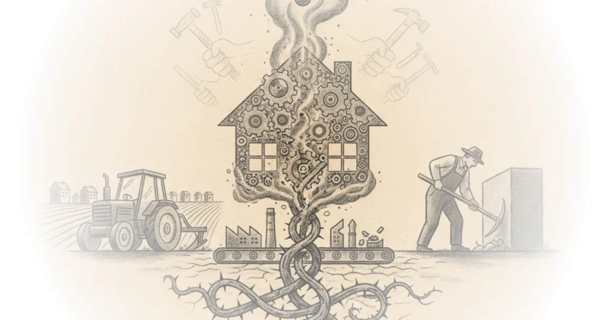

The dream of building homes like cars has been around for nearly a century. But despite massive investment from the U.S. government, venture capitalists, and ambitious entrepreneurs, prefabricated construction keeps missing its target. Brian Potter examines why factory-built homes have failed to deliver the dramatic cost savings that mass production achieved for automobiles -- and the answer lies in a fundamental mismatch between what we hope for and what these methods can actually produce.
The Promise of Factory Building
The logic is seductive. In car manufacturing, direct labor makes up only 10-12% of production costs. For single-family homes built on-site, that same labor accounts for roughly half the total cost. If construction could follow the manufacturing path -- from craft production to industrialized automation -- the savings should be massive.

This vision isn't new. In the 1920s, Alfred P. Sloan of General Motors noted that an $800 Chevrolet would cost $5,000 if built by hand. The same year, German architect Walter Gropius observed that between 1913 and 1926, car prices had halved while construction costs doubled. Gropius called contemporary building methods "far behind the times" and "not fit to solve the problem" of affordable housing.
The potential drove multiple efforts. Operation Breakthrough, a 1970s U.S. government initiative, sought to kickstart industrialized housing production. Katerra, a construction startup that raised over $2 billion in 2018 venture capital, promised to deliver those same efficiencies. The logic was compelling: once factories could build homes the way automobile plants assemble vehicles, costs should plummet.
Why Savings Keep Slipping Away
The savings have been surprisingly modest. Most prefabricators achieve 10-20% cost reductions -- a far cry from the 80%+ price drops that Ford's assembly line brought to cars in the 1920s. Often these savings don't materialize at all, and companies emphasize other benefits like faster construction timelines or improved quality instead.
When significant savings do appear, they tend to be narrow categories. Mobile homes achieved meaningful cost reductions, but those gains haven't generalized to the broader housing market. The promise of durable, permanent cost savings remains elusive.
The history makes this pattern clear. Between 1935 and 1940, prefabricators produced roughly 10,000 homes in the United States. During World War II, about 200,000 prefabricated homes were built -- only 12.5% of the 1.6 million homes constructed during the war. By the 1950s, prefabrication had grown to represent 6-12% of single-family construction, but costs continued to climb relative to other industries.
The greater proportion of hand-work involved in building increased the price in accordance with increasing labor costs.
Critics might note that this analysis underweights recent advances. Modern modular construction firms have achieved meaningful improvements in quality and schedule efficiency, even if full cost parity remains distant. The technology continues evolving, and comparing 2020s modular to 1960s prefab may overstate the continuity of failure.
Bottom Line
Potter's strongest argument is historical: we've been trying to industrialize homebuilding since the 1920s, and the pattern of modest savings has been consistent across eras, governments, and technologies. His vulnerability is that he underweights the real benefits that have materialized -- speed, quality, predictability -- even when full cost reduction proved elusive. The question isn't whether factory building works; it's whether it was ever going to deliver the dramatic savings that defined the automobile industry's transformation.